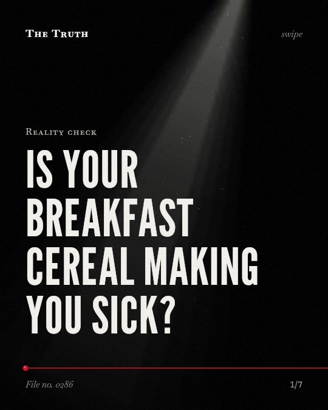

Reality check
Is your breakfast cereal making you sick?

Whole-grain cereals are linked to lower disease risk.
Studies suggest that whole-grain and high-fiber breakfast cereals are associated with a lower risk of diabetes and cardiovascular disease.
Established. Several studies combined, or official data. The evidence goes against the popular idea.
What the research found
Consumption of breakfast, especially that included an RTEC, is linked to an improved cardiometabolic risk profile in U. S. young adults.
“Results suggest that consumption of breakfast, especially that included an RTEC, was associated with an improved cardiometabolic risk profile in U. S. young adults.”
Observational study, 2012. Deshmukh-Taskar et al., Public Health Nutrition.
Daily consumption of whole grain oat Granola reduces total cholesterol (TC) (P = 0.0001) and LDL-cholesterol (LDL-C) (P=0.02) and increases the abundance of fecal bifidobacteria (P = 0.0001), lactobacilli (P = 0.001) and total bacterial count (P = 0.008).
“Daily consumption of WGO resulted in a prebiotic effect on the human gut microbiota composition and significant reductions in TC and LDL-C concentrations.”
Meta-analysis, 2016. Connolly et al., Frontiers in Microbiology.
Skipping breakfast is linked to an increased risk of MetS (OR: 1.10, 95% CI: 1.04-1.17) and its components-namely abdominal obesity (OR = 1.17, 95% CI 1.01-1.34), hypertension (OR: 1.21, 95% CI: 1.10-1.32), hyperlipidemia (OR: 1.13, 95% CI: 1.04-1.23), and hyperglycemia (OR = 1.26, 95% CI: 1.16-1.37).
“Pooled results from the meta-analysis revealed that skipping breakfast was significantly associated with an increased risk of MetS (OR: 1.10, 95% CI: 1.04-1.17) and its components-namely abdominal obesity (OR = 1.17, 95% CI 1.01-1.34), hypertension (OR: 1.21, 95% CI: 1.10-1.32), hyperlipidemia (OR: 1.13, 95% CI: 1.04-1.23), and hyperglycemia (OR = 1.26, 95% CI: 1.16-1.37).”
Meta-analysis, 2025. Yang et al., Nutrients.
Western dietary patterns rich in refined cereals and carbohydrate with high glycemic index have statistically significant effects in incidence of insulin resistance.
“The results show that “Western” dietary patterns rich in red meat, fried and processed dishes, refined cereals and carbohydrate with high glycemic index has statistically significant effects in incidence of insulin resistance.”
Systematic review, 2016. Doostvandi, International Journal of Nutrition and Food Sciences.
Oat-, barley-, or psyllium-based cereals can help lower cholesterol concentrations (grade A).
“Oat-, barley-, or psyllium-based cereals can help lower cholesterol concentrations (grade A)”
Systematic review, 2014. Williams, Advances in Nutrition.
Whole-grain or high-fiber breakfast cereals are associated with a lower risk of diabetes (grade B) and cardiovascular disease (grade C).
“Whole-grain or high-fiber breakfast cereals are associated with a lower risk of diabetes (grade B) and cardiovascular disease (grade C).”
Systematic review, 2014. Williams, Advances in Nutrition.
The type of grain matters.
Refined cereals with a high glycemic index are linked to insulin resistance. However, oat, barley, or psyllium-based cereals can help lower cholesterol concentrations.
The evidence is mixed.
Most studies show associations rather than proven cause-and-effect. That may be why your choice of cereal matters more than the act of eating breakfast alone.
This part is our reading of the evidence, not a finding.
A bowl of cereal in the morning.
You sit at the kitchen table. You pour the cereal into a bowl. You choose between a refined grain and a whole-grain oat.
The honest summary
The evidence suggests that specific types of breakfast cereals (whole-grain and high-fiber) may actually improve metabolic markers rather than contribute to dysfunction.
Most studies on the nutritional impact of breakfast cereals are cross-sectional, meaning they show associations rather than proven cause-and-effect.
What is in your bowl?
Sources
- Michael L. Connolly, Xenofon Tzounis, Kieran Michael Tuohy et al. (2016). Hypocholesterolemic and Prebiotic Effects of a Whole-Grain Oat-Based Granola Breakfast Cereal in a Cardio-Metabolic “At Risk” Population. Frontiers in Microbiology. Meta-analysis, cited 92 times.
- Priya Deshmukh-Taskar, Theresa A. Nicklas, John D. Radcliffe et al. (2012). The relationship of breakfast skipping and type of breakfast consumed with overweight/obesity, abdominal obesity, other cardiometabolic risk factors and the metabolic syndrome in young adults. The National Health and Nutrition Examination Survey (NHANES): 1999–2006. Public Health Nutrition. Observational study, cited 232 times.
- Yang B, Lian L, Xing K, Cen Y, Zhao Y, Zhang Y (2025). Association of Skipping Breakfast with Metabolic Syndrome and Its Components: A Systematic Review and Meta-Analysis of Observational Studies. Nutrients. Meta-analysis, cited 13 times.
- Peter Williams (2014). The Benefits of Breakfast Cereal Consumption: A Systematic Review of the Evidence Base. Advances in Nutrition. Systematic review, cited 217 times.
- Tayebeh Doostvandi (2016). The Association Between Dietary Patterns and Insulin Resistance: A Systematic Review. International Journal of Nutrition and Food Sciences. Systematic review, cited 3 times.
Also read for this file, not quoted
This file was researched and drafted by software, then checked by rules a model cannot talk its way around: each quote above was matched word for word against the paper, and every number had to appear in it. How files are made.